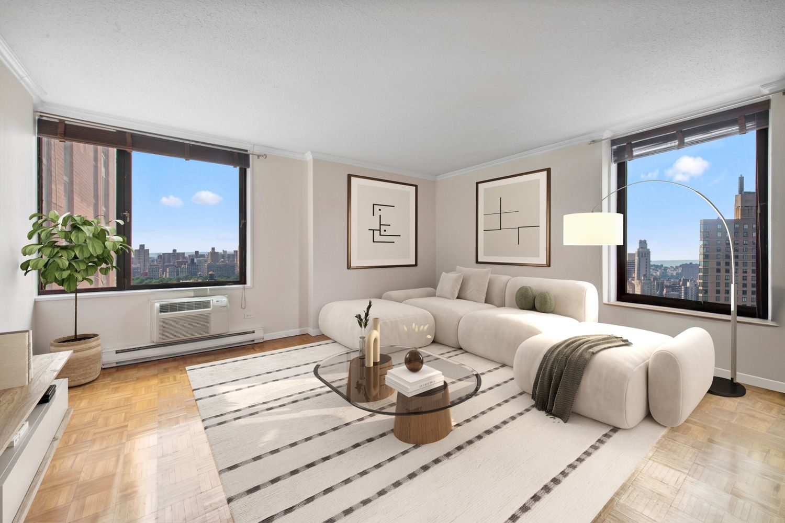

Manhattan · Neighborhood guide
Upper East Side Neighborhood Guide
Boundaries, housing, subway lines, parks and September 2026 market figures for Manhattan's Upper East Side.
By Glenn Velasco
Licensed Real Estate Salesperson · Compass
Updated

The Upper East Side runs from 59th Street to 96th Street, between Central Park and the East River. Its housing ranges from prewar apartment buildings along Fifth and Park Avenues and landmarked townhouse blocks to postwar and newer towers farther east. This guide covers where the neighborhood begins and ends, what kinds of homes you'll find, how to get around, and what the market looks like now. Glenn Velasco is a Licensed Real Estate Salesperson at Compass who works with buyers, sellers and renters on the Upper East Side.
01 / Boundaries
Where is the Upper East Side? Boundaries and sections
The Upper East Side is generally bounded by 59th Street to the south, 96th Street to the north, Fifth Avenue and Central Park to the west, and the East River to the east. Neighborhood boundaries in New York City aren't officially set, so other sources may draw them slightly differently. Within it are smaller neighborhoods with their own names, including Lenox Hill, Yorkville and Carnegie Hill.
The Upper East Side is in Manhattan Community District 8. Its ZIP codes include 10065, 10021, 10075, 10028 and 10128.
02 / History
A short history: from farmland to apartment avenues
In the 19th century much of the area was farmland, crossed by the Boston Post Road and, from 1837, the New York and Harlem Railroad, whose station at 86th Street became the center of Yorkville. Mansions and townhouses went up along Fifth Avenue facing Central Park and on the side streets nearby, and the railroad trench up Park Avenue was covered over by 1910. Starting in 1916, apartment houses began replacing mansions on upper Fifth Avenue. Farther east, the elevated trains over Second and Third Avenues were torn down, and from the 1950s high-rise apartment buildings went up in their place. Manhattan House at 200 East 66th Street was one of the first apartment buildings in the city with a white glazed-brick facade.
A large share of the neighborhood is landmarked. The NYC Landmarks Preservation Commission has designated several historic districts here, including the Upper East Side Historic District (1981), the Metropolitan Museum Historic District (1977), the Park Avenue Historic District (2014), the Carnegie Hill Historic District (1974, expanded in 1993), the Treadwell Farm Historic District (1967) on East 61st and 62nd Streets, and the Henderson Place Historic District (1969) near East End Avenue. In those districts, exterior changes need Landmarks approval, which is worth knowing before you plan a renovation.
03 / Housing
Upper East Side housing: co-ops, townhouses and condos
Prewar co-ops
Many of the apartment buildings along Fifth Avenue, Park Avenue and the side streets between them were built before World War II, and many are co-ops. Co-ops require board approval and a full financial package, and many limit financing, subletting or pied-à-terre use. If you're coming from abroad, condos are usually the simpler route to ownership, because co-op boards often ask for U.S. financial history. Glenn can walk you through the difference in English, Spanish, Italian or French.
Townhouses and historic districts
The Upper East Side has rows of townhouses on its side streets, many of them within the historic districts above. Henderson Place, a group of houses on East End Avenue at 86th and 87th Streets, and the Treadwell Farm blocks are two small examples. A townhouse purchase means looking closely at the building itself: its condition, its landmark status and any work that would need Landmarks approval.
Postwar buildings, condos and rentals
East of Lexington Avenue, much of the housing is in postwar high-rises, both co-ops and rentals, along with newer condominium buildings. New-development purchases follow a different process from resales, with an offering plan, sponsor terms and closing costs that can differ, so read the offering plan with your attorney before you sign. Rentals range from large rental buildings to condos and co-ops rented by their owners, where the building's own rules apply.
04 / Market snapshot
Upper East Side market snapshot, September 2026
These figures come from public data sources, each measured differently, so read them as a range rather than a single price:
- Median asking price
- $1,497,500
- StreetEasy Data Dashboard, September 2026. This is the median asking price of listings that month.
- Median asking rent
- $4,595/mo
- StreetEasy Data Dashboard, September 2026
- Median sale price
- $1,474,587
- Over the three months ending September 2026, essentially flat year over year, per Redfin. Redfin also reports a median of 72 days on market.
Sources: StreetEasy Data Dashboard, September 2026; Redfin Upper East Side Housing Market, three months ending September 2026.
Here the median asking price and the median sale price are close, but both cover everything from studios to townhouses. For a building or a specific apartment, Glenn can pull recent comparable sales. If you already own on the Upper East Side, you can request a free valuation.
05 / Subway lines
Getting around: Upper East Side subway lines
The Upper East Side has two north-south subway lines, plus connections at its southern edge:
- Lexington Avenue line: the 4, 5 and 6 at 59 Street and 86 Street, and the 6 at 68 Street–Hunter College, 77 Street and 96 Street
- Second Avenue line: the Q at 72 Street, 86 Street and 96 Street. These stations opened on January 1, 2017.
- Lexington Avenue/59 Street (N, R, W), connected to the 4, 5 and 6 at 59 Street
- Lexington Avenue/63 Street: the Q at all times; the M on weekdays from about 6 a.m. to 9:30 p.m., and the F late nights and weekends (MTA service pattern since December 8, 2025)
06 / Parks, museums and waterfront
Parks, museums and the waterfront
Central Park forms the neighborhood's western edge. On the East River, Carl Schurz Park holds Gracie Mansion, the official residence of the Mayor of New York City, along with two dog runs and views of the river and the Roosevelt Island Lighthouse. Museum Mile, the string of museums along Fifth Avenue facing Central Park, runs from 82nd Street to 105th Street.
07 / Public schools
Public schools
Public schools. P.S. 6 Lillie D. Blake at 45 East 81st Street is one of several zoned public elementary schools on the Upper East Side. The neighborhood is split among several elementary school zones, so the zoned school depends on the exact address. School zones change, so confirm current zoning and school information for any address with NYC Public Schools' Find a School (opens in a new tab) search.
08 / Recently sold and rented

Recently sold on the Upper East Side
1623 3rd Avenue, Unit 32C
(opens on Compass in a new tab)
Recently rented on the Upper East Side
188 East 64th Street, Unit 2104
(opens on Compass in a new tab)09 / Buying or renting with Glenn
Buying or renting in the Upper East Side with Glenn
Buying on the Upper East Side comes down to understanding the building: whether it's a co-op or a condo and what the board requires, its landmark status, the offering plan if it's new construction, and how a particular apartment compares with similar ones nearby. Glenn handles that work for buyers, sellers and renters. As part of the M Team at Compass, he specializes in international buyers and investors, condos, co-ops and rentals, and he works in English, Spanish, Italian and French.
Planning a purchase? Start with the Buyer's Guide. Looking to rent? The Renter's Guide covers documents, income requirements and applications. Then contact Glenn at 929.392.3707 or glenn.velasco@compass.com.
10 / FAQ
Upper East Side FAQ
What are the boundaries of the Upper East Side?
The Upper East Side is generally bounded by 59th Street to the south, 96th Street to the north, Fifth Avenue and Central Park to the west, and the East River to the east. Neighborhood boundaries in New York City aren't officially set, so other sources may differ slightly.
What neighborhoods are part of the Upper East Side?
The Upper East Side includes several smaller neighborhoods, among them Lenox Hill, Yorkville and Carnegie Hill. It is in Manhattan Community District 8.
What subway lines serve the Upper East Side?
The 4, 5 and 6 run along Lexington Avenue, and the Q runs along Second Avenue with stops at 72nd, 86th and 96th Streets. The N, R and W stop at Lexington Avenue/59th Street, and Lexington Avenue/63rd Street has the Q, the M on weekdays, and the F late nights and weekends.
What kinds of homes are on the Upper East Side?
Prewar co-ops along Fifth and Park Avenues and the side streets, townhouses (many in historic districts), postwar co-op and rental high-rises east of Lexington Avenue, and newer condominium buildings.
How much does it cost to live on the Upper East Side?
StreetEasy's September 2026 data shows a median asking price of $1,497,500 and a median asking rent of $4,595 a month. Redfin reports a median sale price of $1,474,587 for the three months ending September 2026. Prices vary widely by building and apartment, so ask Glenn for recent comparable sales.
Can Glenn Velasco help me buy or rent on the Upper East Side in Spanish, Italian or French?
Yes. Glenn Velasco is a Licensed Real Estate Salesperson at Compass who works with buyers, sellers and renters in English, Spanish, Italian and French, including international buyers. Reach him at 929.392.3707 or glenn.velasco@compass.com.
11 / Sources
Sources
Sources, each checked October 28, 2026: StreetEasy Data Dashboard, September 2026 (opens in a new tab); Redfin, Upper East Side Housing Market (opens in a new tab); Wikipedia, Upper East Side (opens in a new tab); MTA, F/M swap (opens in a new tab); MTA subway stations data (opens in a new tab); NYC Parks, Carl Schurz Park (opens in a new tab); NYC Public Schools, P.S. 6 Lillie D. Blake (opens in a new tab); NYC Open Data, School Zones 2024–2025 (opens in a new tab); NYC Public Schools, Find a School (opens in a new tab).